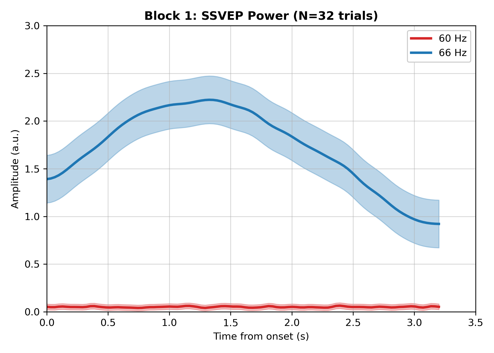

This essay is about a pitfall I encountered when testing Spatio-Spectral Decomposition (SSD) to Steady-State Visually Evoked Potential (SSVEP) data: rank-deficiency in covariance matrices caused by electrode interpolation.
Following analysis, results from one participant showed bizarre bimodal correlations, presenting as parallel $+1.0$ and $-1.0$ bands in the scatter plot, while completely squashing the 60 Hz power curve. Upon closer mathematical inspection, the root cause was traced back to a common preprocessing step: spatial interpolation of broken channels.
When analysing EEG data, it is standard practice to ``repair'' a faulty electrode (e.g., PO7) via spatial interpolation. This procedure mathematically replaces the bad channel's data with an average of its neighbors' voltages. For instance, the signal at PO7 might be reconstructed as a linear combination of adjacent channels: $PO7 = \frac{1}{3}P5 + \frac{1}{3}P7 + \frac{1}{3}O1$.
While visually satisfactory, this deterministic linear combination fundamentally breaks downstream SSD. The SSD algorithm constructs a 16-channel noise covariance matrix, $C_n$. Because one of the 16 channels is now a perfect linear combination of three others, the matrix $C_n$ becomes singular, or rank-deficient.
The core of SSD relies on solving a generalised eigenvalue problem to find spatial filters $W$ that maximise the signal-to-noise ratio: \begin{equation} C_s W = \lambda C_n W \end{equation}
where $C_s$ is the signal covariance matrix. When MATLAB attempts to solve \texttt{eig(Cs, Cn)} with a singular $C_n$, it is mathematically equivalent to dividing by zero. Consequently, the resulting spatial filter $W$ explodes, outputting infinite or imaginary numbers and yielding garbage vectors that point to nothing meaningful.
Because the 60 Hz SSVEP target received an invalid spatial filter, its extracted power dropped effectively to zero (as visualized in Figure). This created an artificial amplitude gap. As a result, the lateralisation index (which I am using a measure of attention to the left side of the screen vs right) per trial was forced into an artifactual binary state, locking into either $+0.99$ or $-0.99$ depending simply on which side the 66 Hz stimulus was presented.
A natural question arises: why did this mathematical collapse selectively crush the 60 Hz filter while seemingly sparing the 66 Hz filter? SSD computes entirely independent covariance matrices ($C_s$ and $C_n$) for each target frequency bin. The numerical instability caused by dividing by a rank-deficient matrix is highly chaotic. For 60 Hz, the eigenvalue solver failed catastrophically, producing a "garbage" filter mathematically orthogonal to the visual cortex. For 66 Hz, purely by numerical luck within the specific noise conditioning of its frequency bin, the solver converged on a filter that still maintained some projection onto the true physiological signal.
Furthermore, it is worth noting why the squashed 60 Hz curve in Figure is not a mathematically perfect flat line at zero. Even though the spatial filter missed the SSVEP target, the resulting vector projection still captures ambient electrical noise and background broadband brain activity. When we extract the power envelope of this channel (e.g., via a Hilbert transform or STFT) and apply temporal smoothing for visualisation, the absolute magnitude of this random, non-directional noise is strictly positive. This results in the small, non-zero wiggles observed at the bottom of the plot.

The solution to this issue does not require altering the preprocessing pipeline or discarding the repaired channels. Instead, we can apply a technique known as Tikhonov regularisation (or ridge regression) directly to the covariance matrix.
In the context of EEG and generalised eigenvalue problems, the goal is to optimise a spatial filter $W$ that maximises signal variance ($C_s$) while minimising noise variance ($C_n$). Mathematically, the filters are derived from the eigenvectors of $C_n^{-1}C_s$. When $C_n$ is rank-deficient due to interpolation, it has eigenvalues at or near zero. This makes its inverse mathematically unstable, heavily penalising any physically relevant dimension and amplifying noise to infinity.
Tikhonov regularisation, often encountered in machine learning as ridge regression, introduces an $L_2$ penalty to the filter weights. In matrix formulation, this is equivalent to adding a scaled identity matrix to the noise covariance: \begin{equation} C_{reg} = C_n + \lambda I \end{equation} where $\lambda$ is a small regularisation parameter. This operation artificially boosts the smallest eigenvalues by $\lambda$, shifting them away from zero and strictly bounding the matrix inversion.
By adding a tiny amount of artificial white noise strictly to the diagonal of the covariance matrix, it breaks the perfect linear dependencies between the interpolated channels without meaningfully altering the spatial features of the data. In MATLAB, this is implemented mathematically as:
Cn = Cn + eye(size(Cn)) * (trace(Cn) / size(Cn, 1)) * 0.01; This single line of code adds 1\% of the average variance (derived from the matrix trace) to the diagonal of $C_n$. This microscopic adjustment instantly makes the matrix strictly positive definite and 100\% invertible.
With the matrix properly regularised, the SSD algorithm can successfully compute stable, physically accurate spatial filters. Applying this fix perfectly re-balances the 60 Hz and 66 Hz envelope curves and entirely restores the true lateralisation measurements.
It is a satisfying experience to encounter a mathematical concept like ridge regression computationally in the wild. Rescuing an otherwise unusable dataset with a simple $L_2$ penalty was a nice moment for me, and I hope this essay serves as a useful case study for others who might encounter similar issues with rank-deficient covariance matrices in EEG analysis.